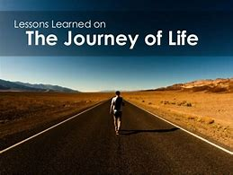

A Jornada Inspiradora de Lindo
Imagine a história de um jovem chamado Lindo, que nasceu em uma família de generais, deputados, ministros, mas ninguém ajudava uns aos outros. Sua avó, Catarina, chorava e dizia: "Meu neto, estude, se forme e um dia nos tire da miséria, a todos nós".
Um certo dia, Lindo saiu de casa sem falar com ninguém e caminhou uma distância de 300km em busca de centros de formação, mesmo sem ter dinheiro para pagar. Lindo era cristão e acreditava que a educação poderia transformar sua vida.
Em um dia na igreja, após o culto, Lindo compartilhou sua história com o Bispo Damião, pedindo ajuda para pagar o curso. Impressionado com a determinação e a vontade de aprender de Lindo, o Bispo decidiu apoiá-lo financeiramente e ofereceu o auxílio necessário para que ele pudesse se matricular.
Com a bolsa de estudos garantida, Lindo começou seus estudos no centro de formação. No início, ele enfrentou dificuldades, pois seus colegas zombavam dele por não ter roupas da moda. Porém, uma colega chamada Alexandra se aproximou e se tornou sua grande amiga, encorajando-o a seguir em frente e não desistir de seus sonhos.
Com determinação e esforço, Lindo se dedicava aos estudos dia e noite. Ele se tornou um aluno exemplar, superando todas as expectativas. Nas provas, surpreendeu a todos ao se destacar como o melhor aluno da turma.
Lindo decidiu enfrentar um grande desafio: participar de um debate com 30 professores, onde demonstraria todo o conhecimento adquirido ao longo de sua jornada de estudos. Com coragem e inteligência, ele se destacou e deixou todos os professores impressionados com sua eloquência e argumentação.
A notícia do sucesso de Lindo chegou até sua mãe, Luizinha, e sua avó, Catarina. Elas pularam de alegria ao ouvir sobre as conquistas de Lindo. Luizinha prometeu nunca mais interferir nas escolhas profissionais de seus filhos, reconhecendo o potencial de cada um.
Lindo, com a bolsa de estudos e o apoio de seus entes queridos, continuou a aprimorar suas habilidades. Ele se tornou um programador excepcional e alcançou reconhecimento mundial em sua área.
De volta a Angola, Lindo encontrou o amor de sua vida, Alexandra. Eles se casaram e tiveram três filhos, vivendo uma vida feliz e inspirando outros a seguirem seus sonhos, independentemente das dificuldades que enfrentem.
Lindo
Luizinha

Suzeth
Catarina
Alexandra